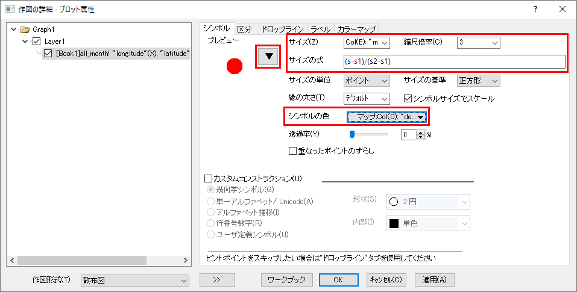

リンクアドレスのコピーによりWebデータに接続
Web-Connect-Copy-Link
概要
データコネクタは、定期更新されるデータファイルへの「ライブリンク」を作成するための理想的な方法です。従来のファイルインポート機能の場合、ソースデータが変更されるたびにユーザがデータを再インポートする必要があります。しかし、ブックにコネクタを追加した場合は、プロジェクトを開くたびにデータソースに対して自動的にクエリを実行できるため、データ管理タスクが簡素化されます。
-

このチュートリアルでは、アメリカ地質調査所（USGS）のWebサイトで「リアルタイム」の地震データに接続する方法、接続されたプロジェクトを開いた時にデータを自動的にインポートするように構成する方法、および、データキャッシュを管理する方法を示します。これにより、プロジェクトを開くたびに最新のデータを確実に取得できます。
必要なOriginのバージョン: Origin 2021 以降
学習する項目
- URLをコピーしてWebに保存されたCSVファイルに接続する方法
- Originの無料のMaps Onlineアプリを使用して、地理データの背景画像を作成する方法
- データコネクタでインポートされたデータの構成を変更せずに作図のセットアップダイアログで作図する方法
- Webコネクタ（CSV）を使用するプロジェクトを保存して再度開く方法
- プロジェクトを開いたときに常にデータが更新されるように、Originのキャッシュメカニズムを操作する方法
リンクアドレスのコピーによりWebデータに接続
- 新しいプロジェクトを開始します。ワークスペースに新しいブックが1つ表示されます。
- USGSのWebサイト: https://earthquake.usgs.gov/earthquakes/feed/v1.0/csv.php をブラウザで開きます。
- ページ右側の「Feeds」の項目に、毎分更新されるCSVデータファイルのリンクが表示されます。
- ページをスクロールして「Past 30 Days」の「All Earthquakes」の項目上で右クリックしてリンクのアドレスをコピーを選択します。
- Originに戻り、ワークブックがアクティブな状態で、メニューからデータ：Webに接続を選択します。
- ダイアログの「URL」ボックスにコピーしたリンクアドレスをCTRL + Vで貼り付け、OKボタンをクリックします。
- 次に開くCSVインポートオプションダイアログの設定はデフォルトのままにして、 OKをクリックします。ワークブックにUSGSサイトからデータがインポートされます。コネクタアイコンが緑色
 なので、データコネクタが有効であることを示しています。
なので、データコネクタが有効であることを示しています。
コネクタでインポートしたデータを作図のセットアップでプロット
ここでは、OriginLabの無料のMaps Onlineアプリを使用して、緯度、経度、マグニチュード、深度データの散布図のベースマップを作成します。
データコネクタでインポートされたデータはロックされているため、列を再配置することはできません。Originのデフォルトでは、Yデータ列の左側にXデータ列がある必要があります。しかし、ロックされたワークシートでは、Xデータ（経度）はYデータ（緯度）の右側にあります。このような場合、データ列を移動することなく列を指定できる作図のセットアップダイアログボックスを使うと、データへの「ライブ」接続を失うことなく作図できます。
- F10を押してアプリセンターを開きます。検索タブをクリックしてカテゴリーを全てにし、検索ボックスで「maps」と入力して検索します。Maps Online アプリに緑色のチェックマークがついていれば、すでにインストールされています。Download and Installアイコン
 が表示されている場合は、このアイコンをクリックして、Originにこのアプリをインストールします。
が表示されている場合は、このアイコンをクリックして、Originにこのアプリをインストールします。
- アプリギャラリー（デフォルトではワークスペースの右側）で、Maps Onlineアプリのアイコンをクリックして起動します。ダイアログボックスで、マップドロップダウンからNasa Earth Observations (NEO) WMS を選択し、レイヤをBlueMarbleNG にして、OKをクリックします。これで、地震データをプロットするためのベースマップができました。
- メニューから、グラフ操作：作図のセットアップを選択します。上中下3つのパネルが表示されていない場合は、ダイアログボックスの上部パネルと下部パネルを展開します。利用可能なデータをフォルダ中のワークシートにし、上部パネルでall-month シートがあることを確認します。上部のパネルでこのシートを選択します。
- 中間のパネルで、グラフタイプを散布図にし、longitudeをX、latitude をYに設定します。中間パネルの右下にある追加ボタンをクリックします。OKをクリックして、緯度経度データの散布図をマップに重ねます。
- プロットをダブルクリックして作成の詳細を開き、シンボルタブで下図のように、シンボルの形を丸にし、サイズをCol(E): "mag"、縮尺倍率を3、サイズの式を(s-s1)/(s2-s1)、シンボルの色をポイント毎：カラーマップ:Col(D):"depth" に設定します。グラフを要約すると、緯度 と経度 の値を使用して、マップ上の散布点の位置を指定し、mag（マグニチュード）データを使用してシンボルのサイズを制御し、depth を使用してシンボルの色を制御しています。
- 
- 右側のプロット操作・オブジェクト作成ツールバーの色スケールの追加をクリックし、色スケールをダブルクリックして色スケール制御ダイアログを開きます。レベルタブで、開始レベルを非表示にする、終了レベルを非表示にするにチェックを付けます。レイアウトタブの逆順のチェックをはずします。タイトルタブの表示にチェックを付けます。OKをクリックして、ダイアログを閉じます。マップにバブルスケールを追加して、シンボルの相対的なサイズを表示することもできます（サイズは地震のマグニチュードでマッピングされているため）。
- 作図の詳細の印刷/ページサイズの設定を使用すれば、ページサイズを変更してマップイメージのアスペクト比にさらに近づけるなど、グラフにいくつかの外観上の調整を加えることができます。また、ミニツールバーボタンを使用して、軸のタイトルを追加したり、フォントやフォントサイズを調整できます。

 |
グラフのプロットされたポイントにカーソルを合わせると、カスタマイズ可能なデータポイントのツールチップが表示されます。ツールチップを右クリックし、設定を選択すると、ツールチップでの表示項目を変更できます。例えば、プロット上にマウスカーソルを置くと、すべてのプロット変数（latitude、longitude、magnitude、depth）を任意の順序および数値形式で表示できます。
|
Webデータのキャッシュを管理する方法
データコネクタは、サイズが大きいデータファイルのインポートを容易にするために考案された機能です。コネクタは、サイズが大きいファイル（デフォルトでは500kBより大きいファイル）をインポートしてもOrigin内部に保存しないため、ディスク領域を節約できます。プロジェクトファイルにデータコネクタを使ったワークブックが多数ある場合は、必要に応じて選択的にファイルに再接続できるため、その時点ですぐにアクセスする必要のあるデータのみをインポートできます。
接続の更新に時間がかかり、結果的に作業が遅くなる可能性があるため、更新回数を管理するためのシステム変数@CFDTを使用できます。これは、ソースデータのコネクタクエリ間の時間の長さを制御します。Webに接続機能によってインポートされたデータは、ファイルサイズ100kBあたりの@CFDT 秒の値に等しい期間キャッシュされます（たとえば、10MBのファイルに接続したデータは900 * 100 = 90,000秒、つまり、約24時間キャッシュされます）。
また、必要な時にキャッシュを削除するためのLabTalkコマンド、delete -webも利用できます。ここで作成している地震データのプロジェクトでは、常に最新のデータを取得したいので、これを利用します。
このチュートリアルでは、次のようにプロジェクトを構成したいとおもいます。
-
- プロジェクトを開くと、データが自動的にインポートされます。
- プロジェクトが開くとキャッシュが削除され、常に最新の情報を取得できます。
- ファイル：プロジェクトの新規保存を選択し、ファイルにUSGS_Earthquake_All_30d.opju などの名前を付けて、保存をクリックします。
- ワークシートのコネクタアイコンをクリックして、自動インポート：プロジェクトオープン時を選択します。
- Originメニューから表示：コードビルダを選択します。コードビルダは、LabTalk、Origin C、およびPythonコードを作成するためのOriginの統合開発環境（IDE）です。ダイアログの左側にあるワークスペースパネルで、Projectの項目を展開し、ProjectEvents.OGS ファイルをダブルクリックします。コードビルダのワークスペースにファイルをロードします。ProjectEvents.OGS は、各Originプロジェクトとともに保存される特別なファイルで、プロジェクトを開いた時などのさまざまなイベントトリガーでLabTalkスクリプトを保存および実行するために使用されます。前述のように、キャッシュされたWebデータを消するために使用できるLabTalkコマンドがあるので、ProjectEvents.OGS をカスタマイズしてプロジェクトを開いたときにWebデータが常に更新されるようにします。[AfterOpenDoc] というセクションを探し、以下の2行のスクリプトを追加し、コードビルダツールバーの保存ボタンをクリックします。
delete -web;
type -b "Webのキャッシュはクリアされました。プロジェクトデータが更新されました。"
ProjectEventsは下図のようになります。
- Originのメニューからファイル：保存を選択してProjectEvents.OGSの内容をプロジェクトに保存します。
- 一度プロジェクトを閉じ、ファイル：最近使ったプロジェクトを選択して、保存したプロジェクトを再度開きます。すると、次のメッセージが開くはずです："Webのキャッシュはクリアされました。プロジェクトデータが更新されました。"その後、ワークシートにデータが入力され、世界地図上の地震のプロットが再生成されるはずです。